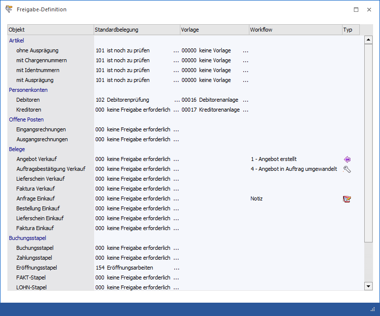

Mit Hilfe des Programms "Freigabe-Definition", welches über
1 WinLine START
1 Freigabe
1 Freigabedefiniton
geöffnet wird, können für Artikel und Ausprägungen (Chargen, Identnummer, etc.), Personenkonten, Offene Poste, Belege, sowie Buchungsstapel eine Standardfreigabe definiert werden.
Hierdurch wird ermöglicht, dass z.B. bei Erzeugung eines neuen Artikels dieser automatisch einen bestimmten Freigabestatus erhält (ebenso z.B. auch ein Buchungsstapel der neu erzeugt wird).
Hinweis
Die Freigabe kann in Abhängigkeit der Berechtigung des Anwenders zu einem späteren Zeitpunkt für eine oder mehrere Objekte verändert werden.

Folgende Eingabefelder können bearbeitet werden:
Ø Objekt
Auswahl, für welches Objekt der WinLine FAKT bzw. WinLine FIBU eine Standardbelegung gewählt werden soll. Unterstützt werden die Objekte "Artikel", "Personenkonten", "Offene Posten", "Belege" und "Buchungsstapel".
Hinweis
Die Offenen Posten werden derzeit nicht unterstützt. Beim Buchen einer Eingangs- oder Ausgangsrechnung wird beim Offenen Posten der Freigabestatus nicht vergeben.
In der Auswahlbox kann eine der definierten Prüfungsanforderungen gewählt werden. Außerdem ist es möglich die Auswahl "000 - keine Freigabe erforderlich" zu hinterlegen, welches bedeutet, dass keine QMS-Prüfung gewünscht ist (Standard).
Hinweis
Der hier hinterlegte Status wird nur bei der Neuanlage des Objektes gesetzt.
Achtung
Es können keine Sperren oder Freigaben standardmäßig mit einem Objekt verknüpft werden. Es kann lediglich zwischen Prüfungsanforderung und Verzicht auf die Prüfung gewählt werden.
Ø Vorlage
An dieser Stelle kann eine Vorlage hinterlegt werden, mit welcher im Zuge der Freigabe eine Änderungen bzw. eine Ergänzungen am Objekt vorgenommen werden können (z.B. kann über die Vorlage definiert werden, dass bei der Artikelfreigabe gleichzeitig auch Zusatzfelder editiert werden sollen). Diese Vorlage wird z.B. bei der Artikelfreigabe geöffnet, wo dann die über die Vorlage definierten Felder bearbeitet werden können.
Ø Workflow
Bei allen Belegstufen besteht die Möglichkeit zu hinterlegen, ob in der angegebenen Stufe ein CRM-Schritt geschrieben werden soll, wobei diese Einstellung in der Belegart noch übersteuert werden kann.
Ø Typ
Wird ein CRM-Schritt zu einer Belegstufe hinterlegt, so wird in dieser Spalte der genaue Typ des CRM-Eintrags angezeigt.
ü - Workflow Startpunkt
ü - Workflow Folgeschritt
ü - Aktionsschritt
Tabellenbuttons

Ø Ausgabe Excel
Durch Anwahl des Buttons "Ausgabe Excel" wird der Inhalt der Tabelle nach Microsoft Excel übergeben.
Ø Tabelleneinstellungen speichern
Die Spalten einer Tabelle können grundsätzlich an beliebige Positionen verschoben, bzw. in der Breite entsprechend angepasst werden. Durch Anwahl des Buttons "Tabelleneinstellungen speichern" werden die Einstellungen benutzerspezifisch gespeichert und bei dem nächsten Aufruf des Programmpunktes wieder vorgeschlagen.
Ø Gesamteinstellungen speichern
Im Gegensatz zu "Tabelleneinstellungen speichern" können mit "Gesamteinstellungen speichern" mehrere Tabellenaufbauten gespeichert und nach Wunsch geladen werden. Zusätzlich werden Sonderfunktionen der Tabelle (z.B. "Spalte gruppieren") ebenfalls bei der Speicherung bedacht.
Buttons

Ø Ok
Durch Anwahl des Buttons "Ok" bzw. der Taste F5 werden die Einstellungen gespeichert.
Ø Ende
Durch Anwahl des Buttons "Ende" bzw. der Taste ESC wird der Programmbereich geschlossen und alle vorgenommenen Änderungen verworfen.